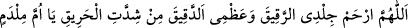
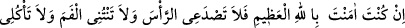
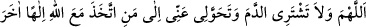

her mü’minin cehennemden olan payıdır.”[40] buyrulmuştur. Yine bir rivâyette: “Bir
gece sıtma hastalığı çekmek, bir senenin keffâreti gibidir. Kim bir gün sıtmaya
yakalanırsa onun için cehennemden kurtuluş olur ve annesinden doğduğu gündeki
gibi günahlarından sıyrılır.”[41] buyrulmuştur.
Câbir (r.a.)’dan rivâyet edildiğine göre sıtma Rasûlullah’ın huzûruna girmek için izin
istedi. Rasûlullah (s.a.) “Kim o?” dedi. O ise: “Sıtma” dedi. Rasûlullah (a.s.) da ona
Kuba’ya gitmesini emretti. Bunun üzerine Kubalılar’dan sayılarını ancak Allâh’ın
bileceği kadar kişi sıtmaya yakalandı. Onlar Rasûlullah’a bu durumdan şikâyetçi olunca
o, şöyle buyurdu: “İsterseniz onu sizden gidermesi için Allâh’a duâ ederim, isterseniz
o hastalık kalsın ve sizi temizlesin.” Onlar, “Temizler mi?” deyince Rasûlullah,
“Evet” dedi. Bunun üzerine onlar: “Bırak kalsın.” dediler.[42]
Hz. Âişe (r.anhâ) şöyle der: “Medine’ye geldiğimizde -ki Medine yeryüzünde vebâsı
en çok olan bir yerdir- sıtmaya yakalandım. Hz. Peygamber (a.s.) “Seni niye böyle
görüyorum?” deyince ben: “Anam babam sana feda olsun ey Allâh’ın Rasûlü, şu sıtma
sebebiyle” dedim ve sıtmaya lânet ettim. Bunun üzerine Hz. Peygamber (a.s.): “Ona
sövme, çünkü o me’murdur. Fakat istersen sana birkaç kelime öğreteyim, onları
söylediğin zaman Allah senden bu sıtmayı götürür.” buyurdu. Öğret deyince de şu
duâyı okumamı söyledi:
“Allahım! İnce cildime ateşin şiddetinden yanan kuru kemiğime acı! Ey humma,
eğer yüce Allâh’a inanmışsan başımı ağrıtma, ağzımı kokutma, etimi yeme, kanımı
içme ve benden, Allah’tan başka ilâh edinen kimseye geç!” Bunu söyleyince sıtma
gitti[43]. İnsânu’l-uyûn’da böyle geçmektedir.
[37]. Sehavî, Mekâsıd, s. 174
[38]. Buhârî, Cenaiz, 6; Eyman, 9; Müslim, Birr, 150; Tirmîzî, Cenaiz, 64; Nesâî,
Cenaiz, 25; İbn Mâce, Cenaiz, 57; Muvatta, Cenaiz, 38; Müsned, II, 240, 276, 473, 479
[39]. Buhâri, Tıb, 28; Müslim, Selam, 79-80; Tirmîzî, Tıb, 25, 33; İbn Mâce, Tıb, 18,